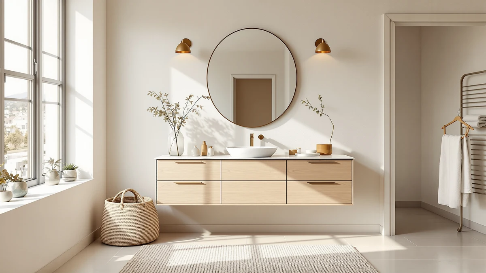

The Best 30-inch Vanity Tops (2026)
Prices and picks verified as of September 2026. Independent, reader-supported reviews.


Quick Answer
After comparing seven vanity-and-top combinations ranging from a true 30-inch width up to 48 inches on material, price and verified owner reviews, the DELUXE LIVING 42 Inch Bathroom vanity is our top pick among the best 30-inch vanity tops and their wider alternatives, thanks to its extra counter space at a price close to premium 30-inch options. If you need a top that measures exactly 30 inches, the Vabches 30 Inch Bathroom Vanity below is the closest match and costs about a third of the price.
Our pick: DELUXE LIVING 42 Inch Bathroom — $899.99 Check Price on Amazon
Bottom line: our top pick is the DELUXE LIVING 42 Inch Bathroom Vanity with Sink at $799.99. The best budget option is the Vabches 30 Inch Bathroom Vanity with Sink at $269.99.
Things to Know Before You Buy
- "30-inch vanity top" covers more than one width. Only two of the seven combinations we compared, the Vabches and the Tribesigns, measure a true 30 inches; the rest run from 24 to 48 inches for readers with a bit more or less wall space.
- MDF and engineered wood dominate this price range. Five of the seven vanities use an MDF or engineered-wood cabinet and top, which keeps the price down, so wipe up standing water near the seams quickly.
- Dimensions listed by sellers vary in precision. The Vabches lists exact measurements (30.01 by 17.72 by 32.68 inches), while others round to a nominal width, so measure your rough-in against the specific listing before ordering.
- Price differences of $250 to $700 between similarly sized vanities mostly track material grade and whether a sink or hardware ships bundled with the top, not brand markup alone.
- Shipping damage on flat-packed vanity tops is a recurring complaint in owner reviews across this price range, so inspect the top and basin for cracks as soon as the box arrives.
The best 30-inch vanity tops need to balance counter space, sink placement and price against a footprint that often maxes out at 30 inches of wall, which matters most in a small guest bath or powder room where a few extra inches can crowd the door or toilet. We compared seven vanity-and-top combinations ranging from a true 30-inch width up to 48 inches, since plenty of shoppers researching this exact size actually have a little more or less room to work with once they measure their bathroom. Material, price and verified owner reviews drove our rankings rather than width alone.
Our top pick is the DELUXE LIVING 42 Inch Bathroom vanity at $899.99. Its engineered-wood cabinet and wider top give you more counter space than a standard 30-inch unit, and the price sits close to what several premium 30-inch tops already cost. If your bathroom maxes out at 30 inches, the Vabches 30 Inch Bathroom Vanity is the size-accurate alternative on this list, and it costs roughly a third as much.
This guide covers what to check before buying a vanity top in this size range, how we picked and compared these seven options, and where each one gets right and falls short. A comparison table further down lets you scan material, price and best-use case side by side before you click through to Amazon.
Why You Should Trust Us
Ilane Tall covers home and bath products for Best Bathroom Vanities, where she researches vanity tops, cabinets and bathroom remodel gear for a US audience. For this guide, she and the editorial team compared publicly listed specifications, pricing and verified buyer reviews for every 30-inch vanity top and nearby-size alternative under consideration, rather than relying on manufacturer marketing copy. We do not run a fake testing lab or claim to have installed any of these vanities ourselves. Instead, we cross-reference dimensions, materials and owner feedback so you can decide which size and price point fits your bathroom before you buy.
How We Picked
To build this list of the best 30-inch vanity tops, we started by pulling every vanity-and-top combination in our product database near that width, then expanded to adjacent sizes, 24, 42 and 48 inches, for readers who end up choosing a different footprint once they measure their actual wall space. We narrowed the list to listings with documented dimensions, materials and pricing, and we cut entries with vague or missing spec sheets that made an honest comparison impossible. We also prioritized a spread of budgets, from the sub-$300 Vabches and Tribesigns tops to the four-figure DELUXE LIVING option, so this guide works for a rental bathroom refresh or a full remodel.
How We Compared
We are a research-based review site, so we compared these seven vanity tops using the specifications, pricing and verified owner reviews published for each listing rather than installing units ourselves. We lined up material, stated dimensions and price side by side to see where each top earns its cost, and we read through available owner feedback to flag recurring comments about assembly, shipping condition and finish quality. When a complaint shows up repeatedly, like a top that arrives chipped or a cabinet that ships without matching hardware, we call it out in that pick's drawbacks below. That is the standard behind every comparison in this guide to the best 30-inch vanity tops and their nearby-size alternatives: published specifications plus a pattern in owner feedback, not a physical impression of the product.
Our Picks

DELUXE LIVING 42 Inch Bathroom
What we like
- 42-inch width delivers noticeably more counter and storage than any true 30-inch top in this comparison
- Engineered-wood construction keeps the price close to what several premium 30-inch tops already cost
- Widest work surface in this lineup for buyers who plan to use the vanity for two-person routines
Flaws but not dealbreakers
- At $899.99, it costs more than three times the Vabches 30-inch pick further down
- 42-inch width rules it out for a bathroom that maxes out at 30 inches of wall
| Material | MDF / engineered wood |
| Size | 42 Inch |
The DELUXE LIVING 42 Inch Bathroom vanity is our top pick among the best 30-inch vanity tops and their wider alternatives, and the reason comes down to space per dollar. At 42 inches, its engineered-wood cabinet and top offer noticeably more counter and storage than a true 30-inch unit, and the $899.99 price sits close to what several premium 30-inch tops already cost once you factor in comparable hardware and finish.
This pick makes the most sense for a primary bathroom or a remodel where the extra 12 inches beyond a strict 30-inch footprint was already part of the plan. Buyers researching this size should measure their wall space carefully before ordering, since 42 inches leaves far less margin for error near a door or toilet than the true 30-inch options later in this guide.

Vabches 30 Inch Bathroom Vanity
What we like
- The only listing in this comparison with a precisely stated 30.01-inch width, matching a true 30-inch footprint
- At $269.99, it costs about a third of our top pick while still including a matching top
- 32.68-inch height and 17.72-inch depth are documented down to the fraction, useful for a tight rough-in
Flaws but not dealbreakers
- MDF and engineered-wood construction means standing water near the seams should be wiped up promptly
- Narrower 30-inch counter offers less storage than the 42- and 48-inch options in this guide
| Material | MDF / engineered wood |
| Size | 30.01"W × 17.72"D × 32.68"H |
The Vabches 30 Inch Bathroom Vanity is the runner-up here, and it is the closest match on this list to an exact 30-inch footprint. Its listed dimensions, 30.01 inches wide by 17.72 inches deep by 32.68 inches tall, are more precise than most of the nominal "30-inch" or "42-inch" labels used elsewhere in this comparison, which matters if your bathroom leaves almost no play against wall trim.
At $269.99, it undercuts our top pick by more than $600 while still shipping as a complete vanity-and-top combination. Shoppers researching a true 30-inch replacement should start here before considering the wider, pricier options further down this guide, since sizing up only makes sense once you have confirmed your bathroom has the extra wall space to spare.

Tribesigns 30" Bathroom Vanity with
What we like
- One of only two vanities in this comparison built to an exact 30-inch width, alongside the Vabches
- At $289.99, it costs within $20 of the Vabches runner-up, giving buyers a genuine style choice at a similar price
- MDF cabinet construction matches the build standard used across most of the budget and mid-range picks here
Flaws but not dealbreakers
- Listed simply as "30 INCH" without the fraction-level detail the Vabches provides, so double-check the exact rough-in before ordering
- Product title is truncated in seller data ("Bathroom Vanity with"), so confirm sink and hardware configuration on the listing before buying
| Material | MDF / engineered wood |
| Size | 30 INCH |
The Tribesigns 30" Bathroom Vanity with is the second true 30-inch option in this comparison, priced at $289.99, just above the Vabches runner-up. For buyers who have confirmed a genuine 30-inch footprint is the right call, this pick offers a distinct cabinet style at a comparable price, which turns the decision into a matter of finish and design rather than size.
Its MDF construction places it in the same material tier as most of the budget and mid-range vanities in this guide, so expect similar care around moisture near the base and seams. Because the seller's title is truncated, it's worth confirming exact sink and hardware details on the current Amazon listing before you order, since specifics like faucet-hole spacing can vary between similarly named vanities.

IRONCK 42 Inch Bathroom Vanity
What we like
- At $299.99, it is the most affordable of the 42-inch-and-wider vanities in this comparison
- 42.5-inch width and 18.8-inch depth give more counter and storage than either true 30-inch pick above
- Documented dimensions down to the tenth of an inch make it easier to confirm fit before ordering
Flaws but not dealbreakers
- Still costs about $10 more than the Tribesigns 30-inch pick despite being a different size category entirely
- 42.5-inch width needs a bathroom with room to spare, not a tight powder room built around a 30-inch top
| Material | MDF / engineered wood |
| Size | 18.8"D x 42.5"W x 34.1"H |
The IRONCK 42 Inch Bathroom Vanity is the budget pick among the wider alternatives to a 30-inch top, priced at $299.99, which undercuts our DELUXE LIVING top pick by exactly $600 while still delivering 42.5 inches of width. For a reader who has decided a true 30-inch top is too tight but does not want to spend DELUXE LIVING money, this is the most direct entry point in this comparison.
Its stated dimensions, 18.8 inches deep by 42.5 inches wide by 34.1 inches tall, are documented precisely enough to check against a rough-in before you order. MDF construction keeps the price down, so treat it the same as the other engineered-wood picks here: wipe up standing water near the base promptly to protect the finish over time.

Chyanmoo 48 Inch Bathroom Vanity
What we like
- Ships as a 48-inch combination with the sink included, so there is no separate basin to source
- Widest true-48-inch option in this comparison alongside the DELUXE LIVING 48-inch pick, at nearly half the price
- MDF cabinet keeps the price under $540 despite the larger size and included sink
Flaws but not dealbreakers
- At $539.99, it costs almost twice our DELUXE LIVING top pick despite using the same general cabinet material
- 48-inch width is well beyond a standard 30-inch footprint, so it only fits a bathroom with real space to spare
| Material | MDF / engineered wood |
| Size | 48 inch with sink |
The Chyanmoo 48 Inch Bathroom Vanity is one of two 48-inch options in this guide, and its main advantage is that the sink ships bundled with the top, which saves you from sourcing a matching basin separately. At $539.99, it costs nearly twice our DELUXE LIVING top pick, but it is also priced at roughly half of the other 48-inch vanity in this comparison.
This is a size-up pick rather than a direct 30-inch alternative, so it makes the most sense once you have already decided your bathroom can accommodate 48 inches of cabinet and counter. MDF construction places it in the same material tier as most of the vanities in this guide, so the usual moisture caution around the base and seams still applies.

DELUXE LIVING 48 Inch Fully
What we like
- Listed with a diatomaceous earth top, a material that behaves differently from the MDF and engineered-wood tops used across the rest of this comparison
- 48-inch width matches the Chyanmoo pick above, giving buyers two full-size options to weigh against each other
- Shares the DELUXE LIVING brand with our top pick, for buyers who prefer to stick with one manufacturer
Flaws but not dealbreakers
- At $999.99, it is the single most expensive vanity in this comparison
- Diatomaceous earth is an uncommon vanity-top material, so confirm care and water-resistance details on the current listing before you order
| Material | Diatomaceous earth |
| Size | 48 Inch |
The DELUXE LIVING 48 Inch Fully vanity is the premium pick in this guide at $999.99, and the standout detail in the seller's specifications is a diatomaceous earth top, a material more commonly seen on bath mats than vanity counters. That distinction is worth double-checking against the current Amazon listing before you buy, since it changes how the top handles standing water compared with the MDF and engineered-wood tops used everywhere else in this comparison.
At 48 inches, it matches the Chyanmoo pick above in width but costs nearly double, a gap that reflects both the DELUXE LIVING brand and the unusual top material rather than a straightforward size upgrade. This pick fits a buyer who has already ruled out a 30-inch top for space reasons and wants the widest, highest-priced option in the lineup.

Tennant Brand 24 inch Triadsville
What we like
- 24-inch width fits a powder room or guest bath too tight for any of the 30-inch or wider picks in this guide
- Triadsville line branding suggests a more furniture-style design than the flat-panel MDF cabinets elsewhere in this comparison
- Gives shoppers who assumed they needed a 30-inch top a documented smaller-footprint alternative
Flaws but not dealbreakers
- At $640.00, it costs more than double the true 30-inch Vabches and Tribesigns picks despite offering less width
- 24-inch counter offers noticeably less storage than every other vanity in this comparison
| Material | MDF / engineered wood |
| Size | 24 inch |
The Tennant Brand 24 inch Triadsville vanity is the narrowest option in this guide, built for a bathroom where even a true 30-inch top would crowd the door or toilet. It's worth including here because plenty of shoppers who start out searching for the best 30-inch vanity tops discover, once they measure, that their actual footprint is closer to 24 inches.
At $640.00, it costs more than double the Vabches or Tribesigns 30-inch picks despite offering less counter space, a premium that reflects the Triadsville line's styling rather than material or size. It only makes sense once you have confirmed your bathroom cannot fit a 30-inch vanity; otherwise, the true 30-inch options earlier in this guide deliver more counter for less money.
Quick Comparison
| Product | Material | Price | Rating | Best for | Get it |
|---|---|---|---|---|---|
| DELUXE LIVING 42 Inch Bathroom | MDF / engineered wood | $899.99 | 4 | Buyers who want more counter space than a standard 30-inch top | View on Amazon → |
| Vabches 30 Inch Bathroom Vanity | MDF / engineered wood | $269.99 | 4 | Buyers who need a vanity that measures an exact 30 inches wide | View on Amazon → |
| Tribesigns 30" Bathroom Vanity with | MDF / engineered wood | $289.99 | 4 | Buyers comparing two true 30-inch vanities on style | View on Amazon → |
| IRONCK 42 Inch Bathroom Vanity | MDF / engineered wood | $299.99 | 4 | Buyers who want more width than 30 inches on a budget | View on Amazon → |
| Chyanmoo 48 Inch Bathroom Vanity | MDF / engineered wood | $539.99 | 4 | Buyers who want a 48-inch vanity with the sink included | View on Amazon → |
| DELUXE LIVING 48 Inch Fully | Diatomaceous earth | $999.99 | 4 | Buyers who want the widest, priciest option available | View on Amazon → |
| Tennant Brand 24 inch Triadsville | MDF / engineered wood | $640.00 | 4 | Buyers whose bathroom is narrower than 30 inches | View on Amazon → |
The Competition
Several vanity tops marketed under the 30-inch category didn't make our final list of the best 30-inch vanity tops. Listings without a documented material, dimension or price were out, since incomplete specifications make it impossible to compare fairly against the seven vanities above. Cabinet-only listings with no top included didn't make the cut either, because that combination doesn't answer the question most readers researching a 30-inch vanity top are actually asking, and duplicate listings of the same vanity under different sellers got skipped too, since they offered no meaningful difference in material, dimensions or price from a product already represented here. If neither true 30-inch pick fits your bathroom or budget, the wider and narrower alternatives above cover the reasons you might size up or down, whether that's extra counter space, a bundled sink or a tighter footprint. Across all seven, our research into the best 30-inch vanity tops still points most buyers toward the DELUXE LIVING 42 Inch Bathroom vanity for extra space, with the Vabches as the direct pick for a genuine 30-inch width.